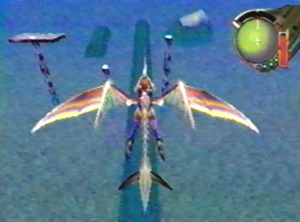

Controlling the Dragon For most of the game, you will have to control the dragon. Holding down the B button, will move the dragon forward. By holding down the L button while pressing B, you can make the dragon move backwards. Also, when flying, if you press R, the dragon will perform a role. The D-pad or analog stick is used to move the dragon up, down, left or right. There is also a dragon radar similar to the enemy radar from the previous games. It's located to the upper right of the screen. Unlike the enemy radar from the rail shooters, this dragon radar has far more uses. It flashes different colors to indicate your target, bearing, altitude, and is used for navigation. |
 Holding the B button, will move your dragon forward and the D-pad or analog stick will move your dragon up, down, left or right. |
The Cursors Main Functions when Controlling the Dragon